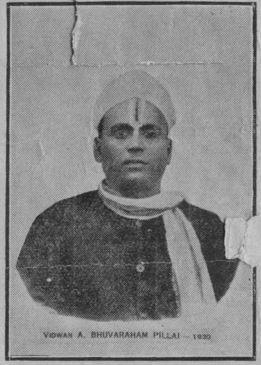

V.M. Subramanya Aiyar was born on 4th june 1905 in Tanjore taluk (and district). The V. stands for his village name, Viṣṇam Pēṭṭi (spot 13 on Tanjore taluk map), and the M stands for his father's name, Mutturaṅka Aiyar.
He went to high school (up to SSLC) in Tirukkāṭṭuppaḷḷi (Spot 20 on Tanjore taluk map), [[Note: near a Tēvāram shrine: Mēlit Tirukkāṭṭuppaḷḷi (KT9)]], the place where kuṭamuruṭṭi branches off from Kāvēri.
He then met with U.V. Swaminathan Iyer,
who was looking for palm leaf manuscripts,
and following his advice went to Minakshi college
(?Annamali University) and studied for Vidwan
[According to TVG, the exact denomination
is 7B-Vidwan. There were 6 papers to be written
for that examination: 5 in Tamil and 1 in Sanskrit].
He came first in this examination and got a prize from the Tiruppanandal Mutt: it was a cash sum of Rs 1000. The function took place in Kumbakonam at Porter Hall, in 1929, and was presided by U.V.Swaminathan Iyer. He was the first student to get such a prize.
[[Note: the first 5 recipients of this award were:

(1) (2)
(2) (4)
(4) (5)
(5) ]
]
He came to Madras, joined the Madras Christian College High School, and served there from 1929 till 1964 as a teacher.
In 1939, he wrote his B.O.L. in Madras University. [[date given by TVG]]
While in Madras, he stid in Triplicane. His house was not far from U.V.S.'s house (which can be seen even now in Triplicane).
Until the time of UVS's death, in 1942, he would go in the early morning and help him in his task of bringing out editions of the old Tamil classics.
In vacation times, he would also go with him on trips to find Tamil palm-leaf manuscripts.
Later, he stid in Nungambakkam (according to TVG, who met him there in 1961).
VMS was connected with UVS library
VMS was also connected with Murray Rajam: he worked with Mr Rajam and helped to his publications [comment by P.B. Seshadri]
VMS first came to Pondicherry around 1966. He stid there at 53, Muttumariamman Koyil Street [according to Mrs Nagalakshmi]. Mr P.B. Seshadri was in the same house (at that time he was 23 years old; he went to stay in Laws Pet after VMS's death; according to him the adress was 48, Muttumariamman Koyil Street; that house has been demolished and rebuilt.
He translated into english:
VMS passed away on 6th october 1981. It was a tuesday. He had been working on the previous day (Monday) and complined that he had some pin in the throat. He went to JIPMER hospital and died suddenly there.
Some time after his death, there was a gathering in Pondicherry at which Professor GROS made a memorial speech recollecting VMS's career. That speech was recorded and can be listened to by clicking here.
One can see the mentions of VMS's name in the prefaces to UVS's books, like for example:
Books published (according to PBS):
+Maṇakkula vināyakar tiruppaḷḷi eḻucci
+Kōkilāmpāḷ Maṇimāli
Family information: